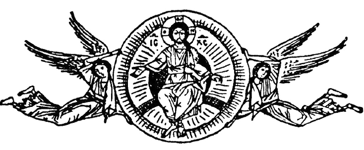
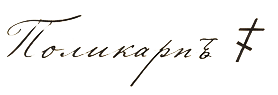

Отец Константин!
До Меня дошли донесения о проповедях твоих против нефтяного промысла, устроенного в уезде по дозволению законной власти. Сказывают, будто ты с амвона именуешь дело сие «адскою жидкостью» и «делом антихристовым», чем приводишь простой народ в смятение и подстрекаешь его к самоуправству против чужой собственности.
Ревность твоя о нравах паствы Мне понятна, но подобные речи не суть просвещение, а разжигание темных страхов и своеволия, за коим неминуемо следует бунт и бедствие для самих же прихожан твоих.
Посему предписываю тебе: первое – немедленно прекратить всякие поучения о «бесовской» природе промысла; второе – в недельный срок донести Мне письменно, что вразумление сие тобою принято и исполнено.
Буде же продолжишь смущать народ сими речами, и дойдет до беспорядков или до жалобы от хозяев промысла или земской власти – дело твое передано будет в Консисторию для формального следствия, со всею строгостью, какую заслуживает потрясение общественного порядка.
Господь да вразумит тебя. Жду ответа твоего.
Архиепископ N‑ский и Поволжский
